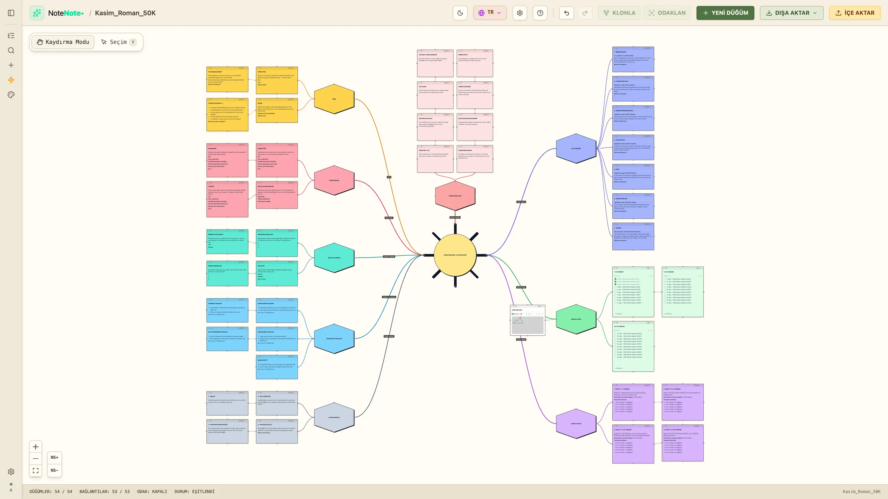

English · Türkçe
Kasım Roman Maratonu Panosu · 30 günde 50.000 kelime

30 günde 50.000 kelime, günde yaklaşık 1.667 kelime demek. Bu pano, kitabını bir akşamda planlayabileceğin bir masa ve yazmaya devam etmeni sağlayan bir skor tabelası: fikrini ve karakterlerini doldur, yedi adımda olay örgünü çiz, yazdığın her günü işaretle.
Panoyu indir (Kasim_Roman_50K.nnn)Note Note panosu · yaklaşık 60 KBNasıl açılır?
- Note Note'u Mac App Store'dan indir (kısa süreliğine ücretsiz).
- Yukarıdaki düğmeyle dosyayı indir.
- Çift tıkla ya da Note Note'ta İçe Aktar ile dosyayı seç.
Nasıl kullanılır?
- 1 Kasım'dan önce: Fikir, Karakterler ve Dünya ve Mekân dallarını doldur. Her biri için yirmi dakika yeter.
- Olay Örgüsü: yedi kart (giriş kancası, tetikleyici olay, birinci dönüm noktası, orta nokta, kriz, doruk noktası, çözüm); her birinde kısa bir açıklama ve “Benim versiyonum” satırı var.
- Sahne Listesi: kelime hedefli dört haftalık kart; her birinde beş sahne yeri.
- Günlük Takip: “1. gün · 1.667 kelime”den “30. gün · toplam 50.000”e 30 kutucuk. Günün toplamına ulaşınca işaretle.
- Kasım Kuralları ve Takıldın mı? İpuçları: sekiz kural ve kötü günler için on küçük yazma ipucu.
- Kasım Sonrası: 1 Aralık'ta ne yapmalı: dinlenmekten düzeltmeye.
- Bir karta tıkla ve tam editör düğmesiyle boş satırlara doğrudan yaz. Her kart senin.
Bu pano bağımsız ve resmî değildir; hiçbir yazma etkinliği kuruluşuyla bağlantılı ya da onlarca onaylı değildir. Metinler ve çizim bu pano için yazıldı; dışarıdan görsel kullanılmadı.
Note Note hiçbir veri toplamaz. Bu sayfa da çerez ya da izleyici kullanmaz. Gizlilik Politikası · Destek